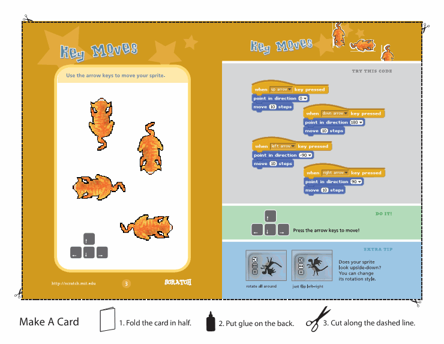

社团活动教学内容设想
#1 社团活动教学内容设想 作者：有志青年 发表时间：2013-3-5 9:09:18
对象：四年级及以上优选的20-30人
时间：每课约1小时
设想的每课教学内容见回复
#2 第一课时：认识scratch 作者：有志青年 发表时间：2013-3-5 9:36:37
教学内容：
1、认识scratch软件
窗口布局【常用按钮、菜单栏、当前角色信息、工具栏、布局按钮、执行按钮、舞台、鼠标坐标、添加角色按钮、角色列表、脚本区域、模块列表】
八类模块【动作、外观、声音、画笔、控制、侦测、数字与逻辑、变量】
三种基础模块【堆模块、启动模块、反馈模块（布尔值）】
舞台大小【480*360、简要介绍坐标】
2、动手做：
让小猫说话（顺序型程序结构）
让小猫动起来（通过造型的切换让小猫动起来、循环型程序结构）
内置绘图编辑器的使用
=======================================
课后回顾：
一、引入课堂：
整个教学过程以我们熟悉的水果忍者引入。
同学们都玩过水果忍者的游戏，如果给你设计这一款游戏，你觉得有需要哪些素材，怎么与游戏者互动？
一只从屏幕下方飞到屏幕上方的水果
一只飞过屏幕的炸弹
一把刀（就是鼠标或者手指头）
如果鼠标碰到水果，那么水果就分开来，并且得分
如果鼠标碰到炸弹，那么就失败，游戏结束
这样一分析，一款游戏就很简单了，我们通过一学期的学习，目标就是做出自己的切西瓜游戏。
二、介绍软件
启动软件，介绍软件的名称，来历，窗口布局
这部分内容相对比较枯燥，
三、认识坐标系
一个角色在舞台中所在的位置，我们用x、y来表示，导入一张坐标系的舞台背景，观察当前鼠标所在的位置的坐标值，请学生来描述。
知道坐标系中还有负数，同一个水平位置上越往右，x值越大；同一个纵线位置上越往上y值越大。
四、动手做
这部分内容和预设的有较大出入，学生对这只小猫很感兴趣，于是我将动手做的内容调整为让小猫在屏幕上走动起来，这一调整，就跳过了顺序型结构，而直接讲解了循环型结构了。
1、让小猫原地踏步
动画就是一组相关的图片连续的播放，例如子弹射出去，汽车的平移等
观察角色1的造型，学生们发现共有两个图片，分别点击，学生发现，图片内容不一样，一部分同学已经领悟到这就是小猫在走动的两个造型。
我们需要让这两个造型轮流播放，就需要用到重复模块，老师示范：点击绿旗开始模块、重复模块，加入下一个造型模块。让学生用自然语言描述这样的脚本执行时是怎么的。因为不断的重复下一个造型，整个动作很快会显得很不自然，这时就需要加入等待模块。
2、学生自己尝试
在学生尝试的过程中，有若干学生自己加入了走10步模块，于是小猫就走动了起来。
3、顺势布置作业
请动脑筋，不仅小猫原地踏步，还得让他往前走。
4、老师示范操作，并继续提出要求，这时的小猫会一直走到屏幕的最右边，然后一直在那里走，怎么能让他往回走呢？学生自己尝试
5、对于碰到边缘就返回而造成的小猫头朝下走的问题，来讲解旋转和左右翻转。
6、小结刚才的操作，并对学生的脚本设计进行规范：1、由大到小：开始模块、重复模块、下一个造型、等待、向前走、碰到边缘就返回；2、由小到大：下一个造型、等待，向前走、重复、插入碰到边缘就返回、开始模块。
7、学生自由练习，找自己感兴趣的角色进行设计
8、进一步规范脚本，程序开始前要有一个初始值，也就是这个角色应该在哪个位置，xy坐标
9、完善程序
10、保存文件
11、播放器的使用
至此一课结束，总时间约为1小时20分钟
［此帖子已被 有志青年 在 2013-3-6 15:50:29 编辑过］
#3 第二课时《“山羊过桥”课本剧》 作者：有志青年 发表时间：2013-3-8 16:49:39
一、学生复习上一课所学内容，让角色动起来
关键点：重复/碰到边缘就反弹/造型切换/前进/初始化数据（坐标系）
二、新授内容，等待与说话相结合，设计一个片段的小故事
如：角色1为黑山羊/角色2为白山羊/舞台为一座独木桥
过程：
角色1【显示】并【说话2秒】“我要到河那边的外婆家去”【等待3秒】
角色2【隐藏】【等待2秒】【显示】【说话2秒】“我要到河对面去找好朋友”
以上是第一回合，两个角色先后出场，所以角色2有个先隐藏/等待后显示的过程
之后，可以由学生自由设计双方的动作，如利用上一课所学知识，同时向桥中间走……
后续一起掉入河中，可以由学生自由创作，如有困难下一课解决。
=========================================================================
 山羊过桥[素材和范例1.0].rar
山羊过桥[素材和范例1.0].rar
［此帖子已被 有志青年 在 2013-3-11 14:25:40 编辑过］
scratch第二课时《“山羊过桥”课本剧》
1/复习旧知
内容：
a/一只羊在屏幕上来回走动
b/两只羊在屏幕上来回走动
c/两只羊在屏幕上面对面走动
2/学习新知
内容：会使用说话模块
a/羊一边走一边说话
b/两只羊轮流说话
3/脚本设计
内容：根据山羊过桥的故事，设计脚本
a/自然语言描述的脚本，小组内语言交流预设的脚本
b/独立完成脚本设计
4/程序调试
a/小组内互相交流各自的脚本
b/完善自己的脚本
注意点：不能急着往前赶，第一和第二两大环节要很扎实，争取到第三环节a及以后
［此帖子已被 有志青年 在 2013-3-11 16:13:09 编辑过］
山羊过桥.sb
［此帖子已被 有志青年 在 2013-3-14 21:21:54 编辑过］
#4 第三课时《山羊过桥二》 作者：有志青年 发表时间：2013-3-16 12:11:45
一/复习巩固
第二课时中仅有一半的学生完成了作品，本节课先复习并完善上一节课的内容
二/新授
下一阶段的学习主要来自两方面：
1/给故事配上背景音乐，这就涉及到声音文件的处理，从网上下载相关软件转换声音格式。【还可以给羊配音】
2/丰富故事情节，进行多场景设计。如他们在来到桥之前干什么？落入河中后怎么样的？
个人设想是完成声音文件的处理，信息技术的学习不单单是某一个软件的学习和掌握，而应该是信息处理综合能力的提高。后期应该还会涉及到图片的处理等
======================================================================================
今天中午，学校组织看电影，但学生们还是主动留下来上scratch课，这样，我们的时间可以从12点一直到2点，相当于三课连上。
一/复习巩固
首先复习了上一节课的相关知识，角色/场景/造型/重复/等待
二/场景造型
新授内容首先涉及到的是场景的造型切换，以实现一个变化的背景，此时要注意场景和角色的区别，场景中默认是必须至少有一个造型的。
运用老师提供的素材，学生自己制作动的背景。
三/层的概念
今天增加了一个羊从树后面走出来，并从鹿身后走过的效果，这里涉及到“层”，跟学生以叠书来比喻层。
四/学生练习
在以上两部分内容讲解完之后，放开一段时间让学生消化，因为此时，就这么二十个学生也明显拉开了差距。
有一些学生对重复模块还没有清晰的概念，个别还有将定位（初始化）的模块放在重复之内的。
在练习的过程中，提出要求，让学生在场景中增加一朵一直在屏幕上飘动的云。
五/背景音乐
使用老师提供的声音素材添加背景音乐，来丰富效果，此时，羊从右边的树后面走出来/两只鹿在河边喝水/太阳在天空中微笑着发出光芒/云彩从屏幕的左边向右飘动/同时伴随着欢快轻松的音乐。
六/小结进度
学习快的学生按照自己的想法修改设计，一般的学生完成至此的全部内容。
七/到屏幕左边了吗？
我们首先要确定的是我们的目的。羊从屏幕的右边向左走，当走到屏幕的最左边，它就应该出现在屏幕的最右边，并且背景切换到山羊过桥的场景。
这段描述部分学生需要充分消化后才能理解，为啥要从左边又到右边。
这样我们就需要判断一下羊啥时候到了屏幕的最左边？此时想让学生来思考并回答，也许我描述的还不够清晰/又或者学生此时还没有能完全了解这只羊的目的。最终我给出了三种方式：
1/让羊重复往前走x次，走完了，就到最左边了
2/当羊碰到屏幕的边缘，就是到最左边了
3/当羊的x坐标小于某一个数值，就算到最左边了
于是我们需要将原来程序中，羊一只重复向前走，改一改，而重复执行多少次我们在上次羊相遇时曾经学过，今天我们改成“直到xx之前”一直向前走。这个xx就是一个判断，当满足xx条件的时候就不再走了，否则就一直重复执行。
八/广播模块
当羊到了边缘不再走时，也就是该切换背景的时候了，这时候就需要传递一个信息给场景，同时还得告诉鹿/树，你们可以退场了。这就是广播。
这个广播是由羊作出了的，当他到达屏幕的最左边，他就大声的广播，告诉整个程序中的所有角色，包括场景“我到了边缘了”。至于，其他角色和场景听到有人大喊时做些什么，就由各自决定了。
老师示范羊走到边缘广播
九/接受广播
当场景听到羊广播到了边缘之后，他就要显示桥的背景图了（教师示范操作）
这其中，就需要对原先的动画背景进行调整，因为变量还没有涉及到，因此之前的背景动画就只能通过重复n次的方式来设置。
当到了边缘的广播发出后，树/鹿又需要做哪些动作呢？隐藏（学生自己完成）
十/学生练习
由学生完成广播模块的内容
这一段时间非常长，老师巡检指导。
学有余力的学生可以设置羊到了桥边后，桥下的一些内容，如鲨鱼/河水等，这样就和上一课的内容接上去了。
十一/保存文件
保存/另存的问题，文件名为：山羊过桥2-1-姓名，第二课第一稿某某学生。
山羊过桥-2-1.sb
［此帖子已被 有志青年 在 2013-3-20 18:06:21 编辑过］
#5 第四课时《山羊过桥三》 作者：有志青年 发表时间：2013-3-27 16:44:41
第三课时结束时让学生提交了自己的作品，发现仅有少数接学生能完成既定的目标，因此本节课作为练习课，老师个别指导，完成上一节课的内容。
===========================================================
scratch进入后，用山羊过桥的课本剧来作为主题教学，本身没有问题，不过在实际教学中，因为是刚接触程序语言，哪怕是搭积木，也是有难度的，例如多个场景的切换，可以缓一缓的。
#6 第五课时《键鼠交互初步认识》 作者：有志青年 发表时间：2013-4-8 9:02:31
通过前四课的学习，学生之间的差距明显拉大，在规划能力上有较大区别。但对于scratch的认识却有一定的深入了，不再陌生，不再惧怕。
从这一课开始的一个章节，将以交互/游戏为主线，预设是完成走迷宫的游戏
首先是学会键盘控制角色的上下左右移动，可以以下图为例

在第一课时中，还可以加入鼠标与角色的交互学习，追鼠标

预设第二课时讲方向键控制角色的第二种方式，用重复执行的if语句。